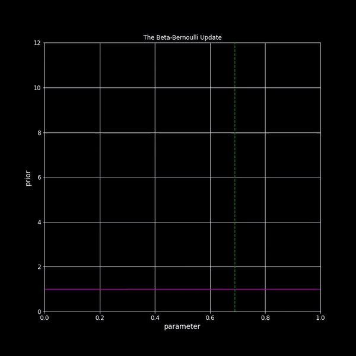

Information Theory & Bayesian ML
|  |
| Beta-Bernoulli Update |
Course Information
- Lectures: MW 11:25am-12:40pm, Mann 107
- Instructor: Sid Banerjee, 229 Rhodes Hall, email
- Teaching Assistant: Spencer Peters
Recitation and office hours available on Piazza.
Course Logistics:
- Zoom: Main lecture meeting link (passwd: Shannon)
- Piazza: All course communications via Piazza page. Please join immediately if not automatically added.
- CMSx: Homework submissions must be done electronically via CMSx.
Textbooks
We will mainly follow two textbooks
Information Theory, Inference, and Learning Algorithms by David Mackay
Pattern Recognition and Machine Learning by Chris Bishop
Both these books have free pdfs available on their websites, and are both excellent resources! We will cover a selection of chapters from each, as well as some additional topics (depending on time/interest).
Lecture Notes
Lecture 1: Introduction
– [slides]
– [annotated] [lecture recording]
– Who was Claude Shannon: short documentary and longer movieLecture 2: Probability review
– [slides]
– [annotated] [lecture recording]
– Demo of Bertrand’s paradox: [Jupyter notebook]
– Intuitive demos: conditional probability, Bayes theorem, likelihood ratiosLecture 3: Measuring information
– [slides]
– [annotated] [lecture recording]
– Some videos: Shannon’s formula of entropy, Documentary on “Order and Disorder” (traces entropy from physics to computer science to information theory)Lecture 4: Data compression 1: Lossy compression
– [slides]
– [annotated] [lecture recording]
– Video series on data compression (by Google developers): Compressor HeadLecture 5: Data compression 2: Typicality and lossless compression
– [annotated] [lecture recording]
– Kraft-Mcmillan inequality (check out the proof of the general case; I personally find it quite unique and surprising!)Lecture 6: Data compression 3: The entropy lower bound, and symbol codes
– [annotated] [lecture recording]
– Huffman codes
– A very nice visual explanation of information and symbol codes: Visual information theoryLecture 7: Data compression 4: Stream codes
– [annotated] [lecture recording]
– Using arithmetic codes for predictive typing: Dasher project, short demo, talk by David MackayLecture 8: Dependent random variables and mutual information
– [slides]
Lecture 9: The channel coding theorem
Lecture 10: Intro to Bayesian statistics
– [slides]
Lecture 11: The Beta-Bernoulli model
Lecture 12: Bayesian Networks
– [slides]
– Guest lecture by Spencer Peters
Lecture 13: The Dirichlet model and Naive Bayes
Lecture 14: The Gaussian-Gaussian and Gaussian-Gamma models
Lecture 15: Bayesian Linear Regression
– [slides]
– Bayesian regression notebook: [Jupyter notebook]Lecture 16: Bayesian Model Selection
Lecture 17: Gaussian Processes
– [slides]
Lecture 18: Gaussian Process Regression
– GP regression notebook: [Jupyter notebook]
Lecture 19: Hyperparameter Tuning via Empirical Bayes, GP Classification
Lecture 20: GP classification via the Laplace Approximation
Lecture 21: Laplace Approximation, and Intro to Monte Carlo methods
– GP classification notebook: [Jupyter notebook]
Lecture 22: Importance Sampling and Intro to Markov Chains
Lecture 23: Markov Chain Monte Carlo
– MCMC notebook: [Jupyter notebook]
Lecture 24: Mixture Models and the EM Algorithm
– Gaussian Mixture Models notebook: [Jupyter notebook]
Assignments
Siddhartha Banerjee
Associate Professor
Sid Banerjee is an associate professor in the School of Operations Research at Cornell, working on topics at the intersection of data-driven decision-making, market design, and algorithms for large-scale networks.